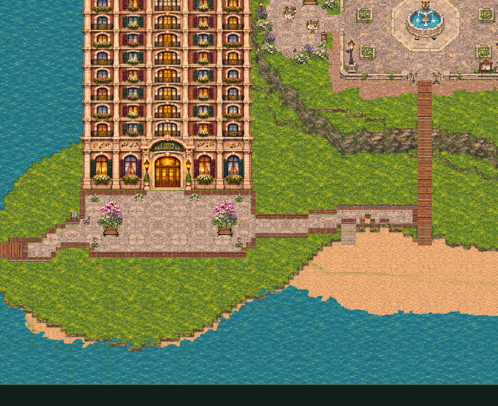

An editable map for your island
A plaza
by the water.
A stone plaza welcomes you to the apartments, with flowering trees, benches and warm lamps. Paved paths connect the western boardwalk and the beach walkway. The stray bumps and pits on the lower grassy terrace have been flattened.
Make it yours
- In Town Builder, use Save project to back up your current map.
- Download the updated map above, then choose Open in the builder and select coda-town-plaza-boardwalk.json.
- Use Select / move to rearrange the decorations. Choose Walk test to explore, or Play this town to visit.
The apartment waterfront
Captured in Town Builder. Open the image for a closer look.

This version starts from your latest 123-object map. All original objects, including the Opera House, remain in place. Fourteen plaza decorations are independently movable. Water, existing piers and stairways are preserved.
Download the earlier courtyards map if you want the previous version.
Use the builder’s City night / Daylight button to compare lighting, and NPCs on / off to choose how busy the town feels while editing.